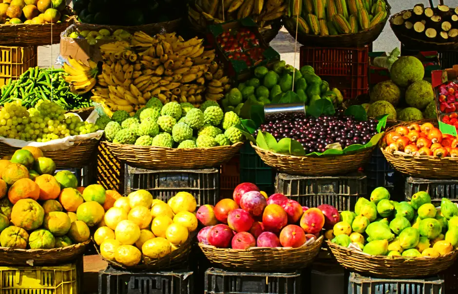

About Us
Abundância! That's how you say "Bountiful" in Portuguese. The Medeiros family opened their first fruit stand in the town of Gravataí, outside of Porto Alegre, Brazil, in the early 1980's. Carlos Medeiros worked with his family and raised money for college. With money saved and several grants, he was able to come up to Los Angeles, where he earned a degree in Agricultural Science at Cal Poly, Pomona. There he met Carolina Rivas (now Medeiros), who was in his same program, a year behind him. Carolina was second-generation from an immigrant family from Jalisco, Mexico. Though much of her family had been working in farming for generations, she was the first to graduate in a field related to agriculture.
Carlos and Carolina were married right after she graduated. Their love story began amidst their mutual passion to promote the production of organic foods, a main focus of their schooling. Carolina's great uncle had developed health conditions because of his exposure to toxic pesticides that had been used where he worked as a migrant farmworker. Both Carolina and her new husband wanted to avoid that, and they wanted to promote better farming practices.
From their modest, rented mobile home in Temecula, California, Carlos and Corolina began consulting work with several farms and avocado orchards in the Rancho California region. They introduced the growers to organic growing techniques, and showed the long term benefits. The pay was sporadic, and they had to take on other work to keep bills paid and food on the table. When they had their first child, Carlos knew it was time to get going on their own business. He fell back on what he knew so well: sourcing and selling quality produce!
Carlos and Carolina opened their first fruit stand in 1990, in Temecula, California. The organic movement was just beginning to warm up in those days, so they picked a location near a Trader Joes, where they would attract the kind of customers who would appreciate organic foods, for a competitive price. They were an overnight success! Carolina brought in several of her family to help them expand, and to help with childcare. At first they had no name for their family-run business but, as they quickly grew to two, and then three locations, they were informally known as "Medeiros Fruit Stands" by the area suppliers.
Tired of so many mispronunciations of his family name, Carlos decided to try out "Abundancia" as a title for awhile. When they bought their first food truck, in 1995, they knew it was time to scale up and promote their business more widely. Branding and labeling their trucks was an important decision. One of Carolina's cousins was a marketing major, and was able to talk them into changing their company name to "Bountiful Foods" and the name has stuck ever since.
In the intervening years, the food trucks continued to grow in popularity, particularly around farmers markets that benefit from Southern California's long growing season. The Medeiros family also grew in number. Their children have become part of the business, as well as others from the extended Rivas and Medeiros families. Then, there was a shift. With growth comes change, and a change of venue was inevitable.
While the fruit stands still did well in the rural areas around Rancho California, the food trucks were doing even better in their coastal routes, near the popular tourist destinations. Getting the growing fleet of then 5 trucks up and over the hill from Temecula to the coast was costing too much time, gas, and maintenance. As part of their dedication to staying green, Bountiful Foods moved to Carlsbad in 2002. This gave them easy access to the popular areas towards San Diego, while still being within reach of the Los Angeles area beaches, during beach-going weather.
The business continued to grow for years, as the world caught on to organic foods, with Southern California residents at the head of the pack. The Medeiros family rose to the demand. However Carlos and Carolina longed for the days of the roadside fruit stands, when they were just starting their family and their business. They liked being closer to the customers. They wanted to have a walk-in storefront.
Then in early 2020, as they were considering purchase of a location for a storefront, the pandemic hit, with quarantines and the travel restrictions that came with it. It was a hard time for the nation and for the world. It was hard for Carolina, as two extended family members of the Rivas family passed from COVID 19. And it was hard for Bountiful Foods.
But with hardship comes ingenuity. The Medeiros family wasn't operating their trucks as much, as there weren't enough customers to sustain business. But they followed the early example of other food sellers in making deliveries to homes and businesses - mostly in the Carlsbad area, but some orders reached as far South as La Jolla, or farther for some larger orders. This pushed them to revamp their website to allow online ordering, in addition to the phone orders. The delivery orders were short-lived, but instead they made it easy for customers to order and come to their warehouse in Carlsbad for "touchless" pickup.
As the pandemic restrictions receded, many customers were still ordering and picking up in Carlsbad. Carlos and Carolina decided it was time to open a storefront. In May of 2022, they cut the ribbon at their current location, at 1975 Chestnut Ave, Carlsbad CA. The reception was huge, and the customers have been showing up in droves! The food trucks are rolling again, and it's clear that there is no sign of stopping. Additional storefronts are now being considered for locations in San Diego, and possibly Los Angeles. Check us out on social media for news and announcements!
Bountiful Foods
1975 Chestnut Ave
Carlsbad, CA 92008
(760) 532-1704
Storefront Hours
Mon-Fri: 7am-7pm
Sat: 7am-4pm
Closed Sundays